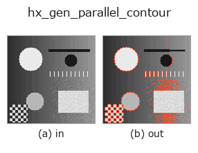

halcon_ext op• 資料種類:contour → contour
• 呼叫:fullseye.apply(img, "hx_gen_parallel_contour", a=0.5, b=0.5)(2-D 的模型是一張圖 + 兩個純量旋鈕 a,b∈[0,1])
• HALCON 對應:gen_parallel_contour_xld(其含義與參數可參考 HALCON 手冊)

*圖為在 128×128 合成輸入上實際執行的輸出。左為輸入，右為輸出。點雲以俯視散點顯示(亮度 = z)，一維序列為折線，體資料為沿 z 的最大值投影，影片為中間影格，複數影像為振幅；無法成像的回傳值直接顯示數值。*
掃描旋鈕 a(0.1 / 0.5 / 0.9，另一旋鈕取預設):
▸ hx_gen_parallel_contour: 旋鈕 a 掃描 (文件網站)
*旋鈕 b 不改變輸出(實測: 0.1 / 0.5 / 0.9 相同)。*
階段(前置運算子 → 本運算子，由左至右):
▸ hx_gen_parallel_contour: 處理階段 (文件網站)
換別的影像(合成場景 / 照片 / 硬幣。上排為輸入，下排為對應輸出。旋鈕取預設):
▸ hx_gen_parallel_contour: 其他輸入影像 (文件網站)
生成每條 contour 的平行(法向偏移)contour(距離由 (a−0.5) 帶符號給出)。
對每個 contour(點數 2 以上)用 np.gradient(c, axis=0) 求切線,將其旋轉 90° 得到單位法線 (-t_col, t_row) / |t|,回傳沿該方向把全部點平移 dist 後的 contour。原 contour 不包含在輸出中(被取代)。
• a → 帶正負號偏移 dist = (a - 0.5) * 10(-5〜+5 像素。a=0.5 時無變化)。
• b 未使用。
• 切線長小於 1e-9 的點(重複點)法線取 0,不移動。點數為 1 的 contour 原樣保留。
法線方向由 contour 的行進方向決定(左右哪側為正取決於點列的方向)。偏移超過曲率半徑時會自相交(可用 hx_test_self_intersect 偵測)。用於比較輪廓加粗/變細後的形狀,或把量測線放在離邊界一定距離處。
• 範例資料目錄(下載 URL / 授權) —— 2-D 用 skimage.data(BSD/公有領域)加合成圖,3-D 給出真實資料源(Stanford/PDS 等)的下載 URL。
• 運算子來歷與參考文獻 —— 該運算子族所依據的研究/方法出處。
• 演算法的正典(作者、年份)與用途見上面的族使用指南。
下面的程式已確認可以執行(與圖相同的輸入)。在 Studio 說明中，此區塊會變成按鈕，可當場載入並執行。
threshold 0.50 0.50 sk_find_contours 0.50 0.50 hx_gen_parallel_contour 0.50 0.50
• gallery2d_halcon_ext — py -3.11 examples/gallery2d_halcon_ext.py
contour 作為輸入)identity · select_contours · smooth_contours · fit_line_contours · contours_to_region · count_contours · total_length · select_contours_xld
halcon_ext)hx_gen_circle · hx_gen_ellipse · hx_gen_rectangle2 · hx_gen_checker_region · hx_gen_grid_region · hx_gabor · hx_fit_surface1 · hx_fit_surface2
*Provenance: ops.py — 2D 運算子登記表。本條目由 tools/opdocs.py md 自動產生(請勿手動編輯)。*
© 2026 Kazufumi Furuse — Fullseye operator documentation. Licensed under Apache-2.0.